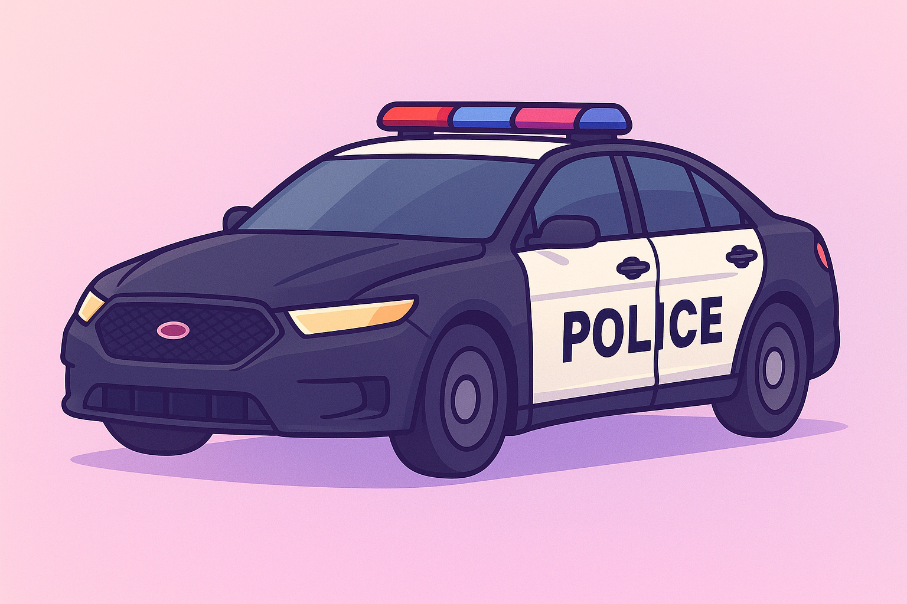

╔════≫──────๑ Kompendium Wiedzy LSPD ๑──────≪════╗
║───────────────────────────────────────────────────────────────────────────────────────────────────║╭━━━ Jednostka Edward ━━━╮
➔ Jednostka patrolowa Edward
Jednostka „Edward” to jednostka szybkiego reagowania i pościgowa LSPD,
odpowiedzialna za szybkie interwencje i ściganie przestępców w terenie miejskim.
Funkcjonariusze tej jednostki korzystają z wysokowydajnych radiowozów
i specjalistycznego sprzętu do pościgów.
Jednostka wspiera patrole w sytuacjach kryzysowych, reaguje na zgłoszenia wymagające
natychmiastowego działania i zapewnia szybkie wsparcie w zabezpieczaniu miejsc zdarzeń.
